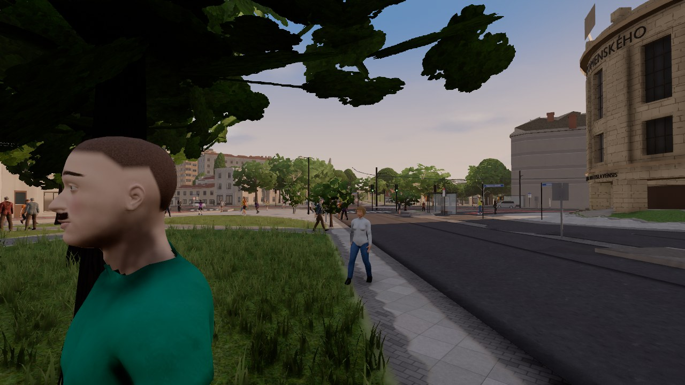
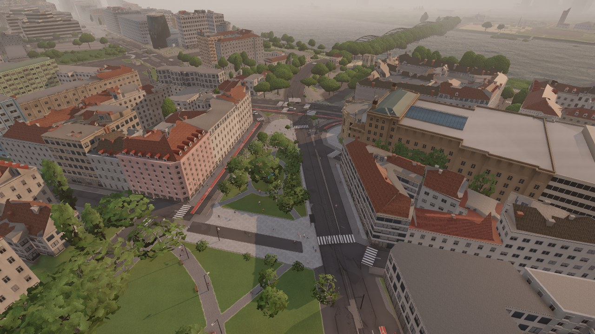
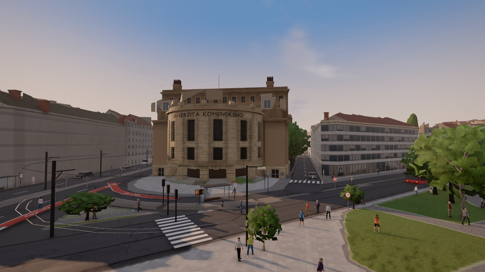
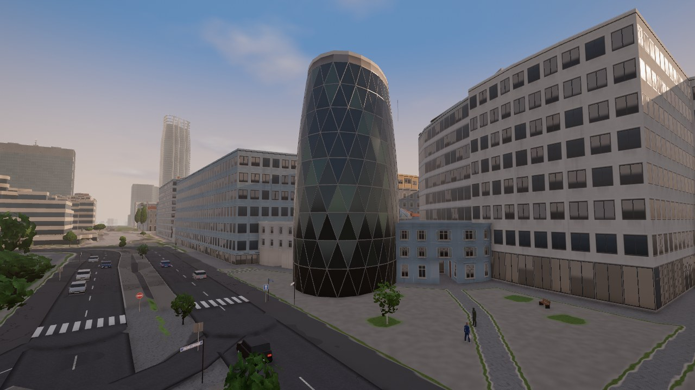
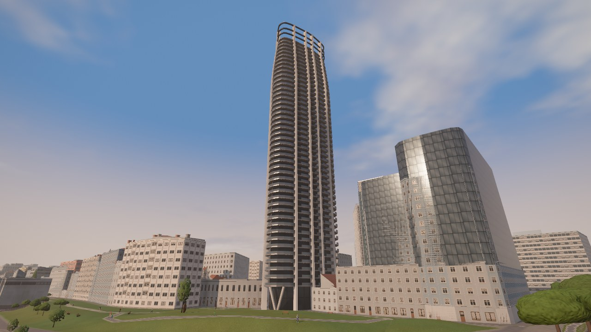
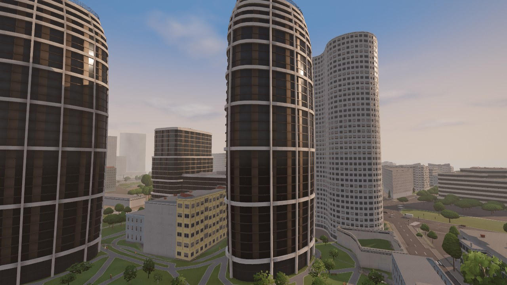

Kontrola mesta – pamiatky-po
commit ? · 2026-11-22T19:04 · porovnanie behov
Šafárikovo námestie safarikovo-namestie · x 620, z 215 · 15 s

ulica
zhoraUniverzita Komenského – rotunda univerzita-komenskeho · x 640, z 245 · 145 s

ulicaEurovea – presklené vajce eurovea-vajce · x 900, z 300 · 3 s

ulicaEurovea Tower eurovea-tower · x 1480, z 470 · 183 s · nie všetky dlaždice boli postavené

ulicaSky Park sky-park · x 1230, z -60 · 183 s · nie všetky dlaždice boli postavené

ulica